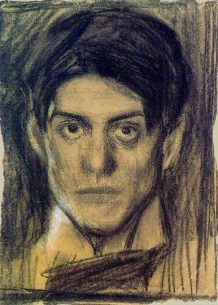
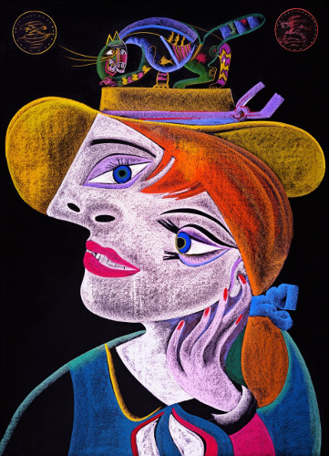

Пабло Пікассо народився 25 жовтня 1881 року в місті Малага в іспанському регіоні Андалусія у родинній садибі небідного дона Руїса Бласко
1891 року родина покинула Малагу, оскільки батько отримав посаду викладача інституту в місті Ла-Коруньї
вересні Пікассо поїхав до Мадрида, щоб розпочати студії в Академії Сан Фернандо. У цей час він намагався наслідувати і популяризувати каталанський модернізм, заради чого 1901 року навіть заснував невеликий часопис «Молоде мистецтво»
Період у творчості Пабло Пікассо між 1901 і 1904 роками відомий як «блакитний» його назва походить від кольору, який домінує у полотнах митця
Період від кінця 1906-го (1907) і до 1909 року в творчості Пабло Пікассо є перехідним — у мистецтвознавстві він також отримав різні іменування, на кшталт «чорний», «темний», «африканський», адже вважається, що митець творив у цей час не в останню чергу під упливом африканського мистецтва
1925 рік став роком радикальної зміни напрямку у творчості Пікассо. Митець починає малювати агресивні картини, майже брутальні, зображуючи деформовані тіла, постаті в конвульсивних позах, що згинаються під тиском сліпої люті та скаженої істерики

Головна сторінка